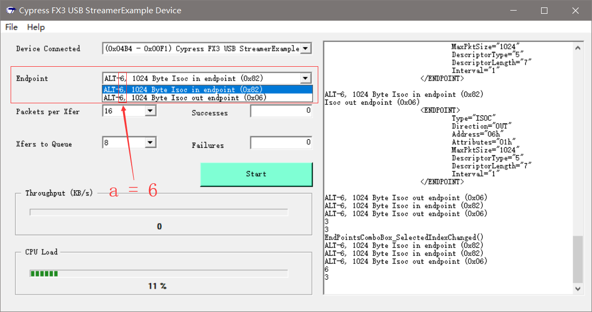

Why StreamExample Always Select Alt6
流传输如何设置备选项
EndPointsComboBox只会留下Alt6节点信息
[...省略]
/*Summary
Recursive routine populates EndPointsComboBox with strings
representing all the endpoints in the device.
*/
private void GetEndpointsOfNode(TreeNode devTree)
{
EndPointsComboBox.Items.Clear(); // 这里会清除之前的节点，导致只留下了最后的Alt6节点
foreach (TreeNode node in devTree.Nodes)
{
if (node.Nodes.Count > 0)
GetEndpointsOfNode(node); // 递归
else
{
CyUSBEndPoint ept = node.Tag as CyUSBEndPoint;
if (ept == null)
{
//return;
}
else if (!node.Text.Contains("Control"))
{
CyUSBInterface ifc = node.Parent.Tag as CyUSBInterface;
string s = string.Format("ALT-{0}, {1} Byte {2}", ifc.bAlternateSetting, ept.MaxPktSize, node.Text);
EndPointsComboBox.Items.Add(s);
}
}
}
}
[...省略]
自动选择接口描述符流程
[...省略]
/*Summary
Search the device with VID-PID 04b4-00F1 and if found, select the end point
*/
private void SetDevice(bool bPreserveSelectedDevice)
{
[...省略]
PpxBox.Text = "16"; //Set default value to 8 Packets
QueueBox.Text = "8";
if (EndPointsComboBox.Items.Count > 0)
{
/**
* ALT-6, 1024 Byte Isoc in endpoint (0x82)
* ALT-6, 1024 Byte Isoc out endpoint (0x06)
*/
EndPointsComboBox.SelectedIndex = 0; // 设置索引，会自动触发对应的事件
StartBtn.Enabled = true;
}
else StartBtn.Enabled = false;
[...省略]
}
[...省略]
/*Summary
This is a system event handler, when the selected index changes(end point selection).
*/
private void EndPointsComboBox_SelectedIndexChanged(object sender, EventArgs e)
{
// Get the Alt setting
// EndPointsComboBox.Text = "ALT-6, 1024 Byte Isoc in endpoint (0x82)"
string sAlt = EndPointsComboBox.Text.Substring(4, 1);
byte a = Convert.ToByte(sAlt);
MyDevice.AltIntfc = a; // a = 6
// Get the endpoint
int aX = EndPointsComboBox.Text.LastIndexOf("0x");
string sAddr = EndPointsComboBox.Text.Substring(aX, 4);
byte addr = (byte)Util.HexToInt(sAddr);
EndPoint = MyDevice.EndPointOf(addr);
// Ensure valid PPX for this endpoint
PpxBox_SelectedIndexChanged(sender, null);
}
[...省略]
